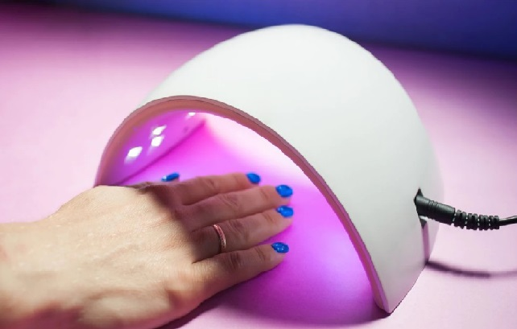
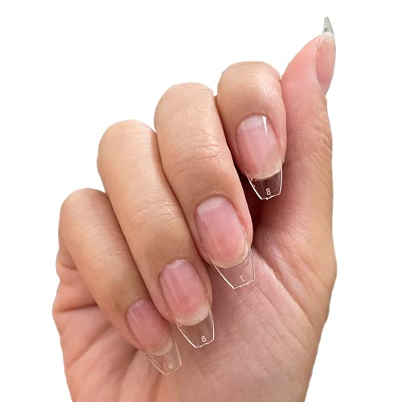

Servicios
El cuidado de las uñas hablan de la personalidad de cada mujer, en Heureka Uñas además se convertierte en un momento único
Manicura Combinada o Rusa
- Ayuda a que las uñas se mantengan en perfecto estado y luzcan saludables.
- Es una técnica sencilla que combina las respectivas brocas o fresas y herramientas básicas como tijeras, alicates, etc.
- Es una técnica precisa que facilita el retiro de la piel muerta.
- Al contar con una cutícula bien preparada la manicura será mucho más duradera. Solicitar turno

Esmaltado Semipermanente
- El efecto de las uñas semipermanentes dura hasta 14 días o hasta que decidas retirarlas totalmente.
- El brillo en tus uñas permanece en todo momento hasta que lo retiras.
- Aporta más dureza a la uña gracias a la calidad del esmalte.
- Permite muchisimos y variados diseños debido a su secado rápido. Solicitar turno
Kapping
- Se aplica una fina capa de acrílico o gel fortificador sobre la uña que actuará como una barrera protectora.
- No alarga la uña natural sino que acompaña el crecimiento de la misma y dura hasta 20 días.
- Puede utilizarse esmaltado común o semipermante.
- No daña la uña al contrario, ayuda a que se fortalezca. Solicitar turno

Softgel
- Se trata de unos tips fabricados con gel que cubren por completo la uña.
- Pemite pasar de tene uñas cortas a largas en minutos.
- Se adhieren con una base permanente especial y se curan con lámpara LED.
- Duran entre 3 y 5 semanas, se retiran con el mismo metodo que el esmaltado semipermanente. Solicitar turno